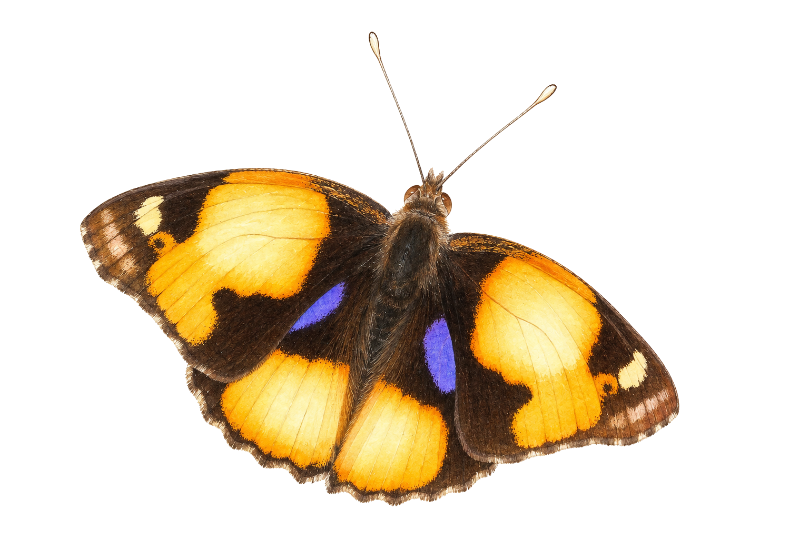

Nymphalidae · 099 / 165
Junonia hierta
Junonia hierta

বৈশিষ্ট্য ও শনাক্তকরণ
হলুদ ডানায় গাঢ় অংশ এবং পেছনের ডানায় নীল দাগ থাকে।
স্ত্রী ও পুরুষের পার্থক্য
স্ত্রীতে কালো দাগ বেশি বিস্তৃত, হলুদ অংশ ছোট মনে হয়।
আকার
ডানা মেলা অবস্থায় বিস্তার 35–40 মিমি। কেনিয়ার জাতীয় জাদুঘরের তাইতা হিলস নির্দেশিকা-র মান; ওকিনাওয়ার নমুনার মাপ নয়। অঞ্চল, উপপ্রজাতি ও সূত্রভেদে পার্থক্য থাকে।
ওকিনাওয়ার দ্বীপে রেকর্ড
রেকর্ডকৃত দ্বীপের উদাহরণ: মিয়াকো, ইরিওমোতে, ইশিগাকি। এটি সব রেকর্ডস্থানের পূর্ণ তালিকা নয়।
আবাসস্থল
রৌদ্রোজ্জ্বল তৃণভূমি, ক্ষেত, পার্ক ও বাগান।এটি সাধারণ আবাসের বর্ণনা, ওকিনাওয়ায় প্রতিষ্ঠার প্রমাণ নয়।
জীবনযাপন ও অতিরিক্ত তথ্য
অনুরোধের জাপানি নাম রাখা হয়েছে। পুরোনো সরকারি তালিকায় Junonia lintingensis; শ্রেণিবিন্যাসের গ্রন্থে এটি J. hierta-র বাতিল পুরোনো নাম। আধুনিক জাপানি নাম রুরিবোশি তাতেহামোদোকি। মিয়াকো, ইরিওমোতে ও ইশিগাকিতে অল্প আগমনের রেকর্ড।
শূককীট ও খাদ্য উদ্ভিদ
প্রদেশে বন্য খাদ্যগাছ ও প্রজননের বিস্তারিত নিশ্চিত হয়নি।
তথ্যসূত্র ও সহায়ক পাঠ
- 環境庁：Athyma fortuna表記
ডেটায় উল্লেখিত সূত্র দেখার তারিখ: 2026-11-10 - 日本の蝶：形態・雌雄差
ডেটায় উল্লেখিত সূত্র দেখার তারিখ: 2026-11-10 - Junonia属の分類論文：lintingensisとhierta
ডেটায় উল্লেখিত সূত্র দেখার তারিখ: 2026-11-10 - 大きさの追加出典：ケニア国立博物館のTaita Hills図鑑
ডেটায় উল্লেখিত সূত্র দেখার তারিখ: 2026-11-10
তথ্য সরবরাহকৃত ডেটার উপর ভিত্তি করে তৈরি (হালনাগাদ: ১০ নভেম্বর ২০২৬)। কোনো দ্বীপের রেকর্ড সেখানে বর্তমান স্থায়ী বসবাস বা সহজে দেখা পাওয়ার নিশ্চয়তা নয়। চিত্র নির্দেশক; শনাক্তকরণে বাস্তব নমুনা ও সূত্র মিলিয়ে দেখুন।